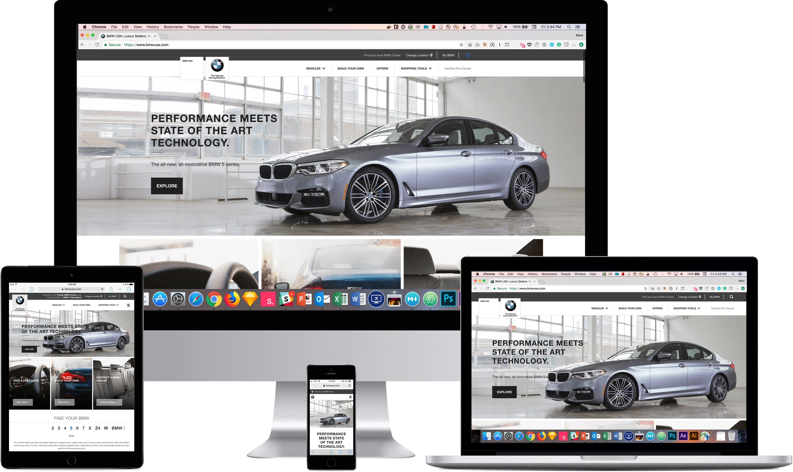
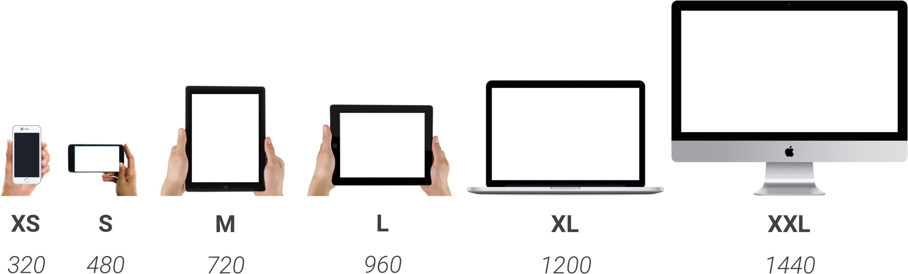
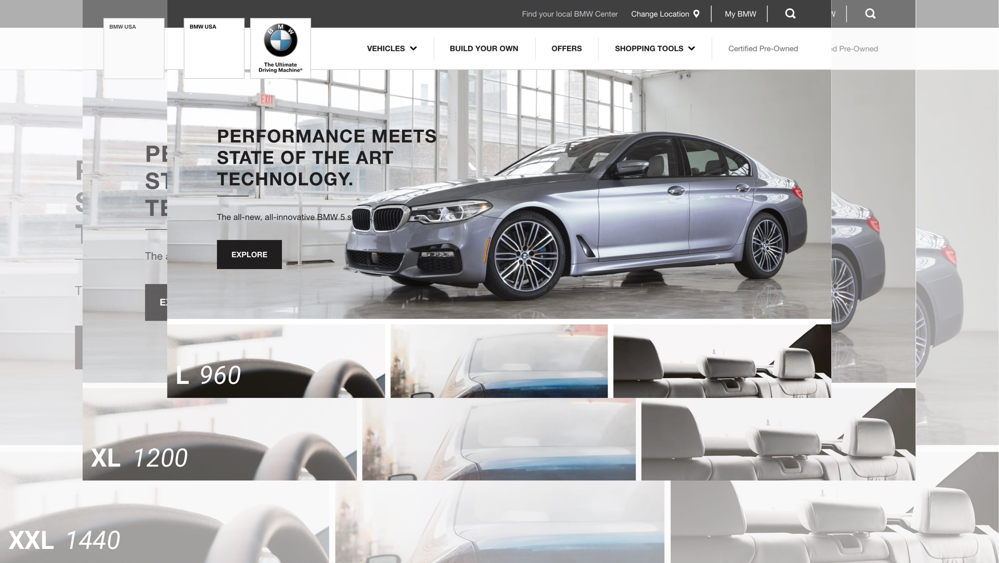
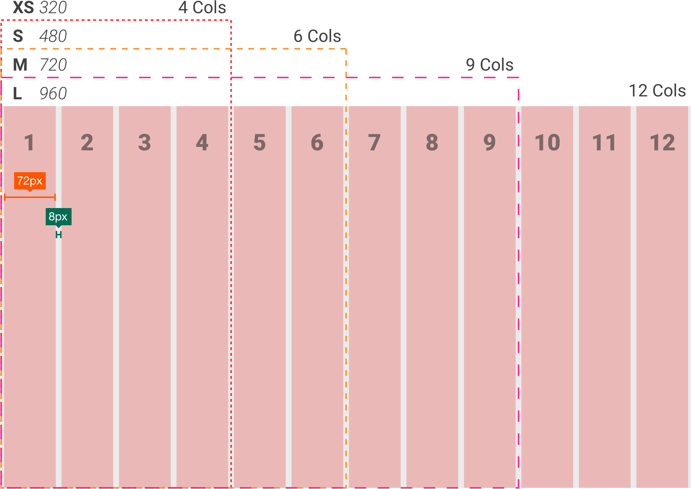
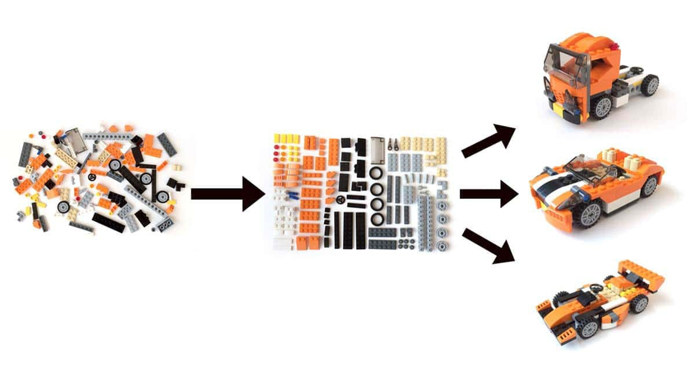
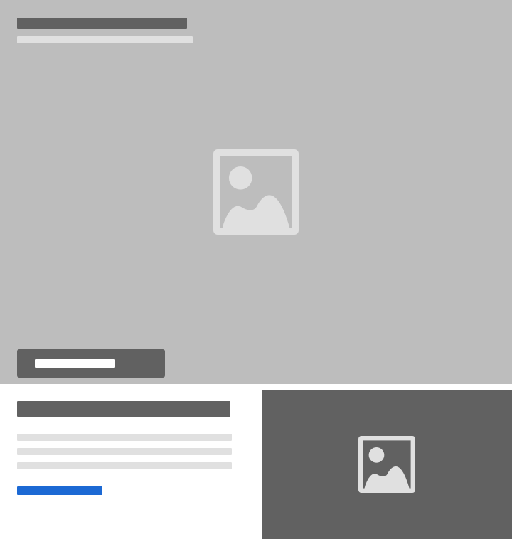
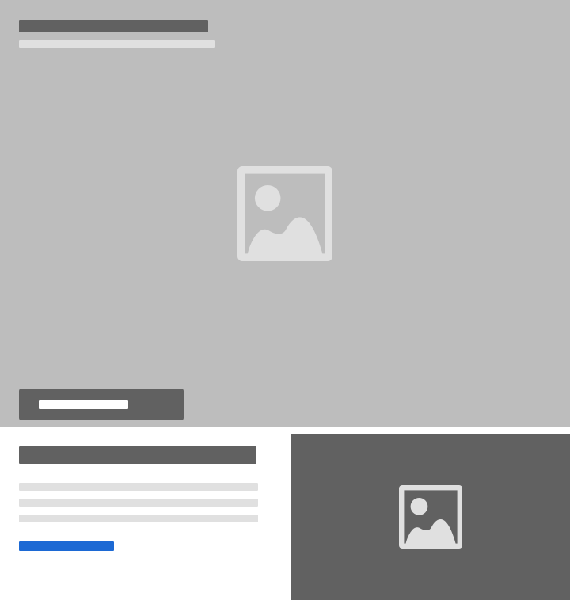
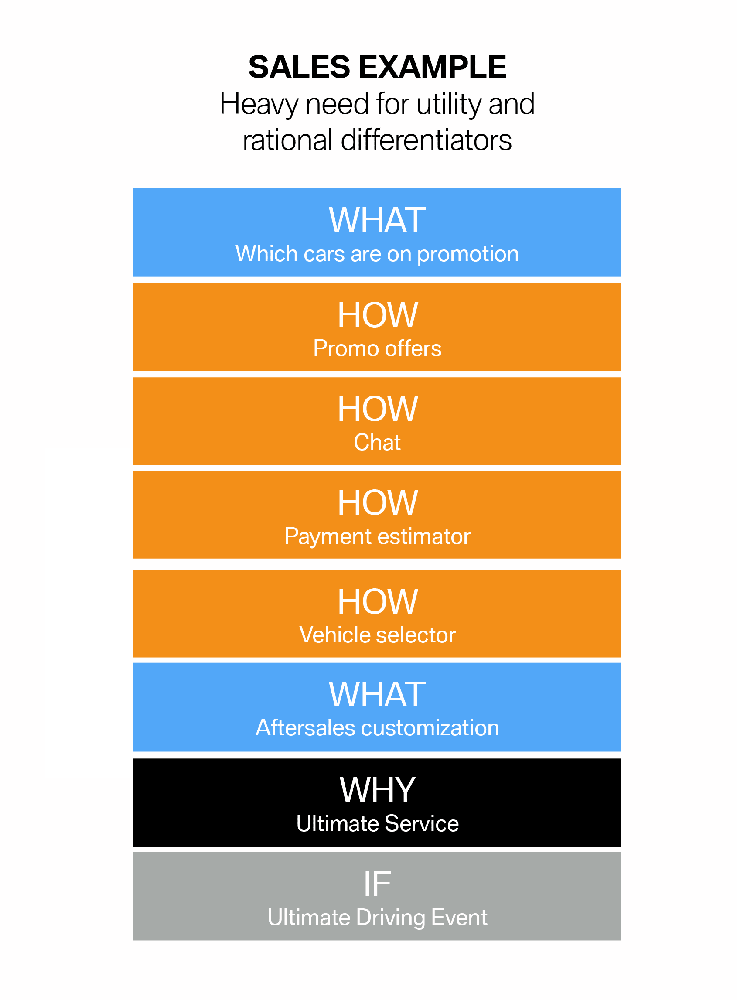
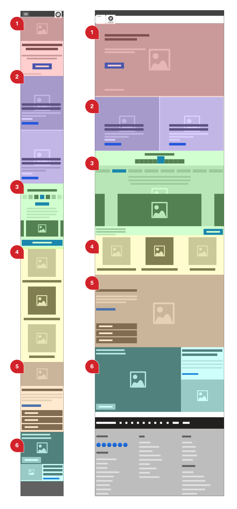
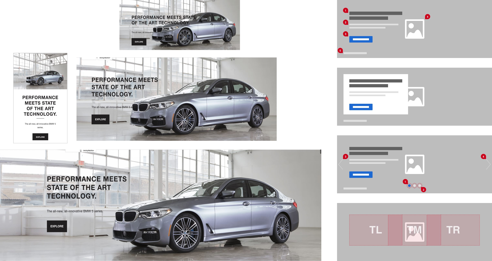

www.bmwusa.com
October 2015–December 2016

During my tenure at KBS, the BMWUSA website was massive digital platform undergoing a significant multi-year redesign of its design and technology to address evolving car shopping behaviors.
This case study focuses on specific areas of the redesign where my UX leadership was involved in solving key areas of the user experience as well as improving team collaboration.
To build a foundational design system, I started by defining the breakpoints—a key ingredient of responsive design.
Rather than focus on device sizes, I established six T-shirt sized breakpoints. These roughly corresponded to current devices but were flexible enough to accommodate future device sizes.
Six breakpoints may seem excessive, but it allowed us greater flexibility. We didn’t need to create six different designs. The top three breakpoints shared the same orientation and aspect ratio, so we were able to scale up the L breakpoint design to fit the XL and XXL breakpoints.
We focused our design efforts on the smallest XS mobile breakpoint and the L desktop breakpoint. These two breakpoints informed our approach to the M tablet breakpoint; I either adapted one of those design patterns or created a new one.
 [caption] We used T-shirt sizes to refer to the six breakpoints rather than devices. Of the six breakpoints, we focused designing three of them: XS 320, M 720, and L 960.
 [caption] The 3 largest sizes use the same design: The grid, images, and type scale up uniformly. The design at 960px scales up 125% at 1200px and then another 120% at 1440px.
A second key ingredient of responsive design is a Fluid Grid. The existing homepage and product pages had tried to use a 12 column grid for their desktop viewport. Unfortunately, the developers had to add two columns to make that design work.
The designers wanted to bring back a 12 column grid. As it is neatly divisible by 2, 3, & 4, which gave them a lot of layout options—halves, thirds, and quarters.
To simplify the design I decided to create a standard column and gutter width. Each column would be 72px wide with a 8px gutter. Starting with 4 columns at XS 320px. We add columns as the viewport gets larger: 6 columns at S 480px, 9 columns at M 720px, until we reach 12 columns at L breakpoint 960px. When we reach the larger breakpoints XL 1200px and XXL 1440px. We scale up the grid & typography proportionally. This responsive fluid grid made it easier to translate patterns & assets across breakpoints.
 [caption] The responsive fluid grid: when the viewport gets large enough we add columns. Starting at 4 columns at 320px to a total of 12 columns at 960px.
To help the visual design team adjust to the modular design system, we developed an easy to use Module Library to be their Design Kit. We organized our modular library using Atomic Design principles. Building from simple atomic elements into molecules and then more complex organisms or modules.
We started the module library with a rigorous content audit. We worked with a content strategist to evaluate the existing content and what was missing. We then organized the content into design patterns or modules. We defined layout options: text alignment, image placement, and dark or light themes.
We applied global styles to each module and described how the layout would adjust at each breakpoint. We started with the smallest breakpoint and made sure we had all the content and functionality that we needed. As we went up in size and had more space, we considered progressively enhancing the modules by adding images or functionality.
The module library reduced QA time considerably. We did an initial round of QA to make the modules functioned properly. Once they passed, we’d only need to QA them again for content.
Atomic Design’s five stages: Atoms, Molecules, Organisms, Templates, and Pages.

Modular design approach began with a content audit. We organized the content and established design patterns. We then used these modules to build any page.
 
[caption]
L M XS

[caption]
L M XS
The BMW USA homepage needed to support three very different narratives at different times of the year: Sales Events, Vehicle Launches, and Brand Events.
For each event type, we determined the goal of the page. We created a content hierarchy that enabled the user to fulfill that goal and used our module library to build the page.



The homepage marquee area is intended to be a singular, impactful experience. It is the standard bearer for the full site experience, and it was vital that it was consistent across devices.
We wanted to make a very versatile module: One that could hold a single image, or a carousel, or a video in the background. We added options for aligning the text to the left, right, and center, allowing us to work with a broader range of photos.
This module was designed to be on the top of the homepage beneath the main navigation. On larger screens, it was intended to be above the fold and reveal the top of next content piece.
For desktop, I chose a wide aspect ratio of 16:6. However, on mobile, it was too short. I decided to use the new <picture> element and create three crops to use them at different breakpoints: Allowing us to use a 16:9 image for small screens and a wider ratio of 16:5 or full bleed on the largest screen.

The homepage marquee in action: M tablet, XS mobile, L laptop, and XXL desktop HD. Wireframes show variations such as a carousel, text box, and text alignment options.